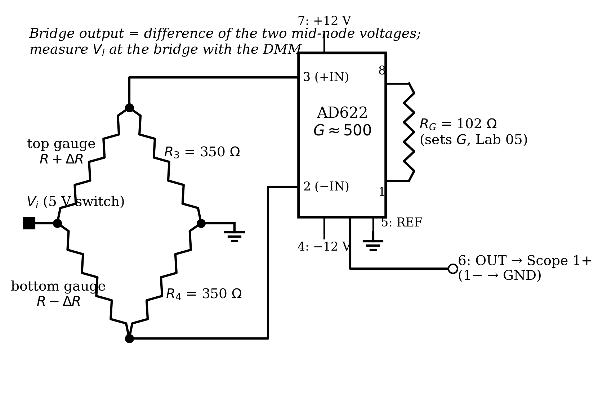
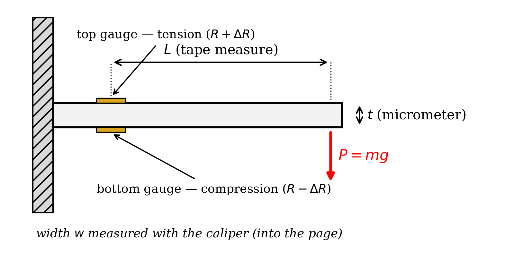
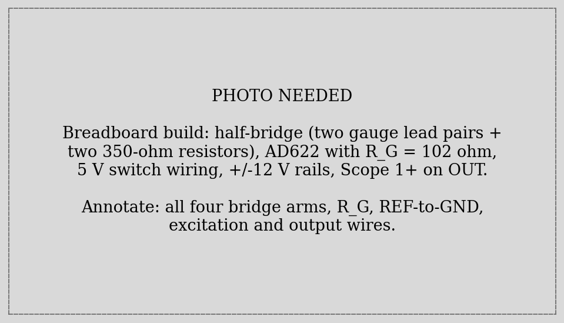
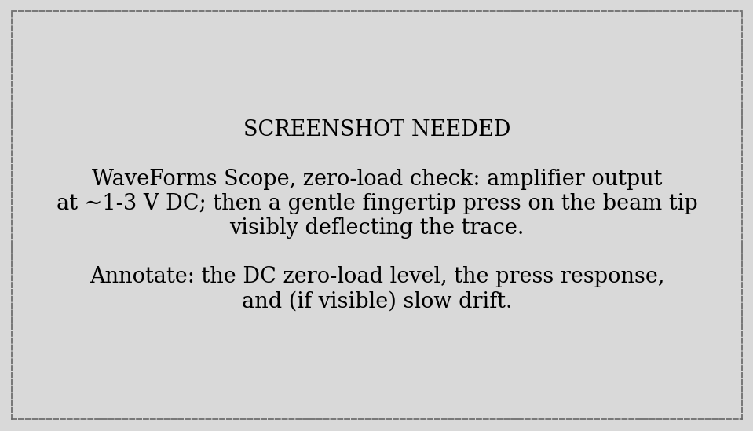
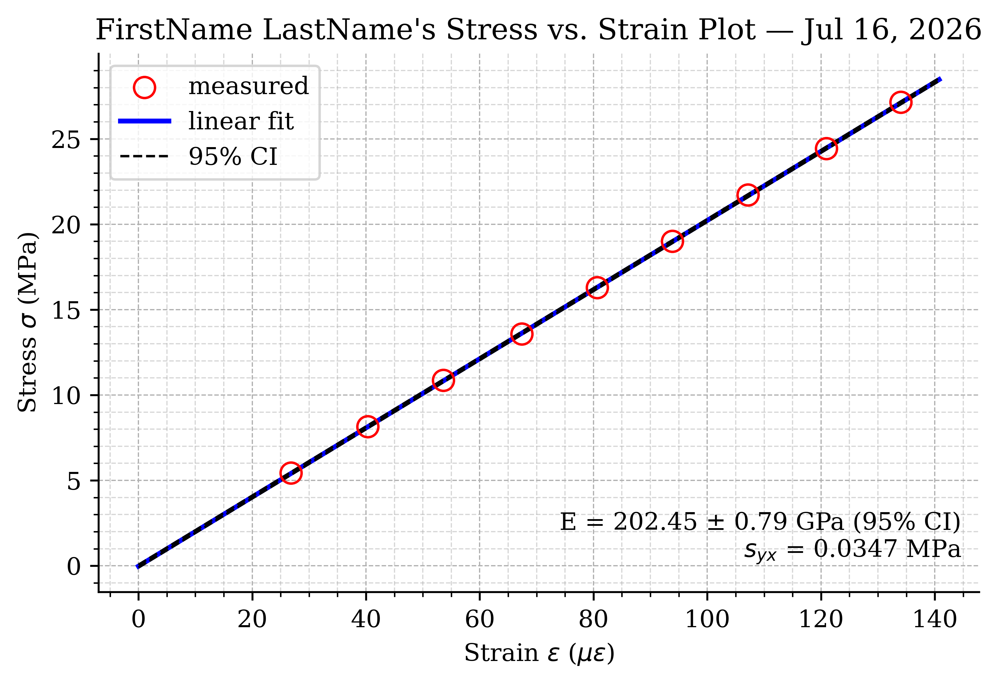
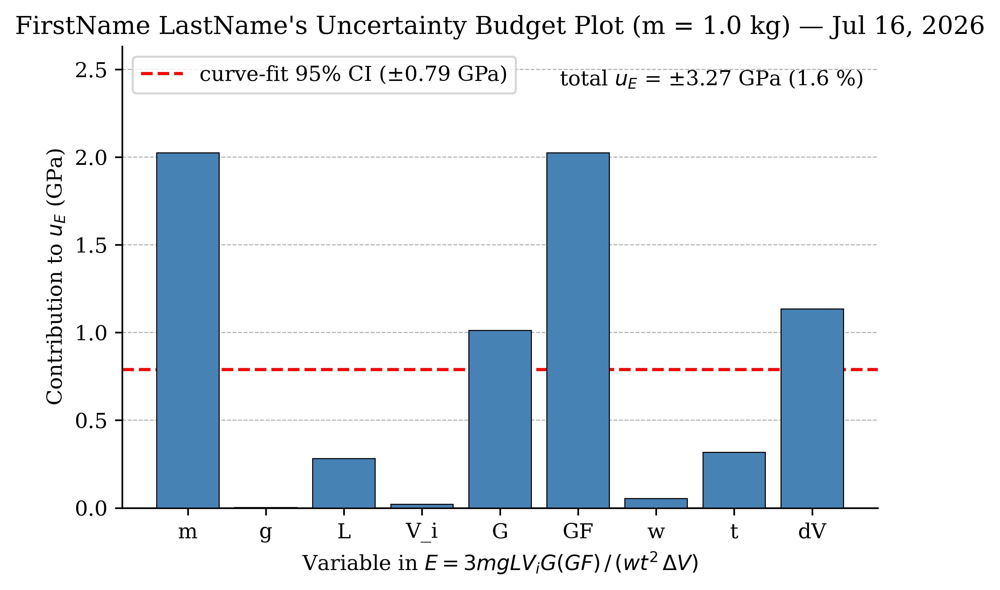

ME 3300 Experiment-06: Strain Gauges, the Wheatstone Bridge, and Uncertainty in Young’s Modulus
Week 1: Parts 1–4 — measure the beam, build the bridge + amplifier, acquire the load data, and fit Young’s modulus. Week 2: Parts 5–6 — uncertainty budget and the propagation-vs-fit comparison. Resume at the banner in Section 9.
1 Learning Objective
1.1 Objectives
Your objectives for this laboratory session are to:
- Understand how a strain gauge converts deformation into a resistance change, and why a Wheatstone bridge is needed to read it
- Build a half-bridge (two active gauges) on a cantilevered beam and amplify its output with your Lab 05 instrumentation amplifier at \(G \approx 500\)
- Use a bracketing procedure (unload–load–unload) to cancel the slow drift that plagues high-gain bridge measurements
- Measure Young’s modulus of the beam from a stress–strain regression, and compare against published values
- Construct a full uncertainty budget for \(E\) by propagation of error, and learn the power rule that makes it fast
- Compare propagated uncertainty against the curve-fit confidence interval — and understand why they answer different questions
1.2 Check Your Understanding
By the end of this lab, you should be able to answer all of these questions.
1.2.1 Hardware & Instruments
- A strain gauge’s resistance changes by milliohms. Why can’t you just measure that with your DMM?
- In the half-bridge, why do the two gauges sit on opposite faces of the beam? What common disturbance does that arrangement cancel?
- Why does this measurement need the AD622 at \(G \approx 500\) — and why the instrumentation amplifier specifically (recall Lab 05 Part-6)?
- What does the zero-load amplifier output look like, and why isn’t it zero?
- Why must nobody touch the wiring during data collection?
1.2.2 Programming
- What do
v[:-1]andv[1:]return, and how do they pair each loaded reading with its bracketing unloaded readings? - How does a list of
(name, value, uncertainty, exponent)tuples plus one loop become a complete uncertainty budget? - How do you draw a bar chart with
ax.bar?
1.2.3 Data Analysis
- Why does averaging the before and after deltas cancel a linear drift?
- In \(E = 3mgLV_iG(GF)/(wt^2\Delta V)\), why does \(t\)’s uncertainty count double?
- Your propagated \(u_E\) is larger than the curve-fit CI. Which sources of error does the fit CI not see, and why not?
- If the gauge factor were wrong by 5%, by how much would your \(E\) be wrong?
2 Pre-Lab Setup
You should come to lab having completed all tasks in this section before Week 1.
2.1 Extend Your Folder Structure
Add a Lab_06 folder set to your ME3300 folder:
ME3300/
├── Lab_01/ ... Lab_05/
├── Lab_06/
│ ├── Code/
│ │ ├── Lab06_Prelab_Walkthrough.ipynb
│ │ └── FirstName_LastName_Lab06.ipynb
│ ├── Data/
│ └── Figures/No new packages are needed this week.
2.2 Read the Background Section
Read the Background section before lab. It derives every equation this lab runs on: the gauge relation, the half-bridge output, the beam-bending stress, and the uncertainty-propagation power rule.
2.3 Complete the Prelab Walkthrough Notebook
Download Lab06_Prelab_Walkthrough.ipynb from Canvas into ME3300/Lab_06/Code/ and work through it before lab. It introduces this lab’s new skills on a toy problem (the density of a measured cylinder):
- the power rule for propagating uncertainty through products, quotients, and powers
- building an uncertainty budget with a list of
(name, value, u, exponent)tuples and one loop - drawing the budget as a bar chart (
ax.bar) - pairing neighboring readings with
v[:-1]andv[1:]slices — the bracketing trick
As always, working through the prelab will allow you to answer the checkpoint questions in the Prelab quiz on Canvas before your lab session.
2.4 Python Quick Reference: New This Lab
| Task | Python command |
|---|---|
| All but the last element | v[:-1] |
| All but the first element | v[1:] |
| Pair neighbors (before/after) | dv1 = v_load - v_unl[:-1], dv2 = v_load - v_unl[1:] |
| A table as data | vars = [('m', 1.0, 0.01, +1), ...] (list of tuples) |
| Unpack tuples in a loop | for name, x, u, p in vars: |
| Relative uncertainty term | p * u / x |
| Bar chart | ax.bar(names, values) |
| Nearest index lookup | i = np.argmin(np.abs(masses - 1.0)) |
3 Laboratory Introduction
Strain measurement is one of the workhorse techniques of mechanical engineering: load cells, pressure transducers, torque sensors, and flight-test instrumentation are all, underneath, strain gauges on cleverly shaped metal. This two-week lab builds that entire measurement chain from parts you now understand individually — and then does something most courses skip: it asks, rigorously, how well you know your answer.
Week 1 is construction and measurement. Two strain gauges are bonded to a cantilevered steel beam; you will wire them into a Wheatstone half-bridge, amplify the bridge’s sub-millivolt output with your Lab 05 AD622 at a gain near 500, and record the output as you hang calibrated masses from the beam’s end. Beam theory converts each mass into a bending stress; the bridge converts each voltage into a strain; the slope of stress vs. strain is Young’s modulus — a fundamental material property, measured by you, with equipment you built. This is also the payoff of Lab 05’s common-mode demo: the bridge’s tiny differential signal rides on volts of common-mode voltage, exactly the situation the in-amp exists for.
A gain of 500 comes with a price: everything is amplified — including slow thermal drift in the bridge. You will defeat drift the way practicing engineers do, with procedure rather than better hardware: every loaded reading is bracketed by zero-load readings taken immediately before and after, and the two difference estimates are averaged.
Week 2 is about honesty. Your \(E\) depends on nine measured quantities — masses, gravity, three lengths, two gain-like factors, an excitation voltage, and a voltage change — each with its own uncertainty. You will propagate all nine into a single uncertainty budget for \(E\), see at a glance which ones actually matter (the answer will surprise whoever lovingly measured the beam with a micrometer), and compare the propagated total against the curve-fit confidence interval from Week 1. Those two numbers disagree, and understanding why they disagree — scatter versus systematic error — is among the most transferable lessons this course offers.
4 Background
4.1 The Strain Gauge
A metallic strain gauge is a thin zig-zag foil grid on a flexible backing, bonded to the surface it measures. Stretch the surface and the foil stretches with it: longer, thinner conductors mean higher resistance. For small strains the relationship is linear:
\[\frac{\Delta R}{R} = GF \cdot \varepsilon \tag{1}\]
where \(\varepsilon\) is the surface strain (m/m — dimensionless) and \(GF\) is the gauge factor, about 2 for metallic foil gauges (\(GF = 2.012\) for this apparatus). The catch is scale: engineering strains here are on the order of \(100\ \mu\varepsilon\) (\(100 \times 10^{-6}\)), so a 350 Ω gauge changes by \(\Delta R \approx 350 \times 2 \times 10^{-4} = 0.07\) Ω. Your DMM cannot resolve that reliably, and lead-wire resistance alone would swamp it. Reading strain gauges requires a circuit built for the job.
4.2 The Wheatstone Half-Bridge
The Wheatstone bridge (Figure 1) converts a small resistance change into a small voltage — which amplifiers handle superbly. Two resistor pairs form two voltage dividers across the excitation \(V_i\); the output is the difference between the divider midpoints. With all four resistances equal, that difference is exactly zero — the bridge is balanced — and any small unbalance appears directly as output voltage.
This lab’s beam carries two gauges at the same axial station, one on top and one underneath (Figure 2). Under an end load the top surface stretches (\(R + \Delta R\)) while the bottom compresses (\(R - \Delta R\)). Wiring them as the left-side dividers of the bridge — the half-bridge configuration — doubles the signal, and for equal-and-opposite arm changes the output is exactly linear in \(\Delta R\). Two precision 350 Ω resistors complete the right side. The output is:
\[V_{bridge} = V_i \, \frac{\Delta R}{2R} = V_i \, \frac{GF \cdot \varepsilon}{2} \tag{2}\]
The half-bridge buys one more thing, and it is the reason the two gauges share one beam location: temperature compensation. A temperature change alters both gauges’ resistance identically — both arms of the left divider move together, its midpoint stays put, and the output doesn’t budge. Strain moves the arms oppositely and passes straight through. The bridge is a hardware implementation of “reject what is common, keep what differs” — the same idea as the in-amp’s common-mode rejection, one level further upstream.

4.3 Amplification, and What You Actually Measure
Plug numbers into Equation 2: \(V_i = 5\) V, \(GF = 2\), \(\varepsilon = 100\ \mu\varepsilon\) gives \(V_{bridge} = 0.5\) mV. Hence the AD622 at \(G \approx 500\) (\(R_G = 102\) Ω, sized with Lab 05’s gain equation), lifting the signal to comfortable few-hundred-millivolt scale. What your DAQ records is the amplified change from the unloaded state, \(\Delta V = G \cdot \delta V_{bridge}\); inverting the chain gives strain:
\[\varepsilon = \frac{2\, \Delta V}{V_i \, G \cdot GF} \tag{3}\]
Why the instrumentation amplifier and not a humble non-inverting stage? Both bridge output nodes sit near \(V_i/2 = 2.5\) V. The signal is the millivolt-scale difference between them — Lab 05 Part-6, no longer a demo.
4.4 Stress in an End-Loaded Cantilever
From beam theory, bending stress at the surface is \(\sigma = Mc/I\) with bending moment \(M = P L\) at the gauge station (\(L\) = gauge-to-load distance, \(P = mg\)), surface distance \(c = t/2\), and rectangular second moment \(I = w t^3/12\):
\[\sigma = \frac{M c}{I} = \frac{(mgL)(t/2)}{w t^3/12} = \frac{6\,m g L}{w t^2} \tag{4}\]
(Watch the algebra: one \(t\) cancels, leaving \(t^2\) in the denominator — a famous typo trap.) Hooke’s law links the two sides of your measurement, \(\sigma = E\,\varepsilon\), so plotting Equation 4 against Equation 3 for a range of masses gives a line whose slope is Young’s modulus — fitted, with confidence intervals, by the Lab 02 machinery. For the uncertainty work in Week 2, the whole chain collapses into one formula by substituting Equation 3 into \(E = \sigma/\varepsilon\):
\[E = \frac{3\,m g L\, V_i\, G \cdot GF}{w\, t^2\, \Delta V} \tag{5}\]

4.5 Drift, and the Bracketing Procedure
At \(G = 500\), a 20 µV wander at the bridge — thermal effects in gauges, resistors, and connections — is a 10 mV wander at your DAQ, comparable to the signal from 100 g. You will see it: the zero-load output creeps over the session. The countermeasure is procedural. For each mass, take an unloaded reading, a loaded reading, and another unloaded reading, and form two estimates of the change: \(\Delta V_1 = V_{loaded} - V_{unl,before}\) and \(\Delta V_2 = V_{loaded} - V_{unl,after}\). Drift pushes one estimate up and the other down by nearly the same amount, so their average cancels linear drift — and their disagreement hands you a free, honest estimate of the uncertainty in \(\Delta V\) (you will use exactly that in Week 2).
4.6 Propagation of Uncertainty and the Power Rule
Every measured input carries uncertainty; the question is how much each one matters to the result. For a result \(R = f(x_1, x_2, \ldots)\) with independent uncertainties \(u_{x_i}\), the standard (RSS) propagation is:
\[u_R = \sqrt{\sum_i \left( \frac{\partial R}{\partial x_i}\, u_{x_i} \right)^2} \tag{6}\]
Equation Equation 5 is a pure product of powers, \(E = C \prod x_i^{\,p_i}\), and for that form the partial derivatives collapse into something wonderfully simple — the power rule:
\[\frac{u_E}{E} = \sqrt{ \sum_i \left( p_i \, \frac{u_{x_i}}{x_i} \right)^2 } \tag{7}\]
In words: convert every uncertainty to a relative (percent) uncertainty, multiply each by its exponent’s magnitude, and combine by root-sum-square. The exponents in Equation 5 are \(+1\) for \(m, g, L, V_i, G, GF\); \(-1\) for \(w\) and \(\Delta V\); and \(-2\) for \(t\) — thickness uncertainty counts double. The prelab walkthrough derives and practices this rule; in lab it turns a nine-variable propagation into ten lines of Python.
5 Part-1: Measure the Beam (Week 1)
Three lengths, three instruments — chosen so each dimension gets appropriate resolution.
- With the tape measure: the distance \(L\) from the center of the gauges to the load point (the hanger groove). Note the tape’s resolution.
- With the caliper: the beam width \(w\). Note its resolution.
- With the micrometer: the beam thickness \(t\). Note its resolution. Measure all three dimensions three times each and record every reading — the spreads feed Week 2.
- Determine local gravity from the local gravity calculator using latitude 46.7324 and elevation 2579 ft. (It differs from 9.81 in the third decimal — and you will find out in Week 2 whether that matters.)
Q1. Record all measurements (three per dimension), their means, each instrument’s resolution, and local \(g\).
Q2. Why does \(t\) get the micrometer while \(L\) makes do with a tape measure? Answer with the exponents of Equation 5 in hand — which dimension can least afford error?
6 Part-2: Build the Bridge and Amplifier (Week 1)
Build with supplies off and WaveForms closed. Your guides: Figure 1 and the photo in Figure 3.

- Identify the two gauge lead pairs at the beam (note which is the top gauge). Measure each gauge’s resistance with the DMM — expect ≈350 Ω. Handle the leads gently; the bonded foil does not forgive tugging.
- Wire the half-bridge per Figure 1: gauges as the left arms, the two precision 350 Ω resistors as the right arms. Excitation from the ADS 5 V switch; bridge ground to the GND rail.
- Rebuild your Lab 05 AD622 with \(R_G = 102\) Ω (measure it; compute \(G\) from Lab 05’s gain equation). Bridge midpoints → pins 3 and 2; ±12 V rails; REF (pin 5) → GND; OUT → Scope 1+ (1− → GND).
- TA check. Then power up (5 V switch on; ±12 V via Supplies), and measure the actual excitation \(V_i\) at the bridge with the DMM — Equation 3 uses this number, not the nominal 5.
- Open the WaveForms Scope and look at the output live (GUI first, as always): a steady DC level — the zero-load output — most likely not zero, and possibly a volt or more. Watch it for a minute: it will wander slightly. Now press gently on the beam tip with a fingertip and watch the trace respond; compare Figure 4. Close WaveForms when done.

Q3. Record both gauge resistances, \(R_G\), your computed \(G\), and the measured \(V_i\). The gauges read ≈350 Ω on the DMM — why is the DMM nonetheless hopeless for measuring the strain-induced change in that resistance?
Q4. The zero-load output is not zero. Give two physical reasons. Why is that acceptable — what does your measurement procedure do about it?
Q5. What extraneous effect does the half-bridge configuration compensate for, and how does having the two gauges at the same location on opposite faces accomplish it?
7 Part-3: Acquire the Load Data (Week 1)
Open FirstName_LastName_Lab06.ipynb (starter on Canvas). One script walks you through the whole bracketed loading sequence: for each mass, it takes an unloaded reading, prompts you to load, takes the loaded reading, prompts you to unload, and reads zero again. Each reading averages 10 seconds at 50 Hz.
At \(G = 500\), shifting a jumper wire or leaning on the bench moves your readings by more than the smallest mass does. Once acquisition starts: only the loader’s hands near the apparatus, only on the weights, and gently — no bouncing the beam.
import dwfpy as dwf
import numpy as np
import time
masses = np.arange(0.4, 2.01, 0.2) # kg
v_unloaded = [] # 10 readings (one per bracket)
v_loaded = [] # 9 readings
fs, duration = 50, 10.0
n = int(fs * duration)
with dwf.Device() as device:
supplies = device.analog_io # ±12 V for the AD622
supplies['V+']['Voltage'].value = 12.0
supplies['V+']['Enable'].value = True
supplies['V-']['Voltage'].value = -12.0
supplies['V-']['Enable'].value = True
supplies.master_enable = True # (bridge runs off the 5 V switch)
time.sleep(0.5)
scope = device.analog_input
scope['ch1'].setup(range=5.0)
def read_mean():
"""One 10-second averaged reading of the amplifier output."""
scope.single(sample_rate=fs, buffer_size=n, configure=True, start=True)
return scope['ch1'].get_data().mean()
input("Beam UNLOADED and still. Hands off the bench, then Enter...")
v_unloaded.append(read_mean())
print(f" unloaded: {v_unloaded[-1]:.5f} V")
for m in masses:
input(f"GENTLY hang {m:.1f} kg, let it settle, then Enter...")
v_loaded.append(read_mean())
print(f" {m:.1f} kg loaded: {v_loaded[-1]:.5f} V")
input("GENTLY remove the mass, then Enter...")
v_unloaded.append(read_mean())
print(f" unloaded: {v_unloaded[-1]:.5f} V")
supplies.master_enable = False
v_unloaded = np.array(v_unloaded)
v_loaded = np.array(v_loaded)
np.savetxt('../Data/StrainBridge_Loads.csv',
np.column_stack([masses, v_loaded,
v_unloaded[:-1], v_unloaded[1:]]),
header='mass_kg,v_loaded_V,v_unl_before_V,v_unl_after_V',
delimiter=',')The structure is all Lab 04–05 material (a prompted input() loop, a helper def, scope.single averaging); the one new idiom is at the very bottom:
v_unloaded[:-1]andv_unloaded[1:]— slices meaning all but the last and all but the first. The ten unloaded readings interleave the nine loaded ones, so[:-1]lines each loaded reading up with the zero before it, and[1:]with the zero after it. Two shifted views of one array — no loop required. (Practiced in the prelab.)- Note each unloaded reading does double duty: it closes one mass’s bracket and opens the next. Nineteen readings, nine fully bracketed load points.
Q6. Watch the printed unloaded values as the run proceeds and record the first and last. How much did the zero drift over the session, and what would that drift have done to your data if you had used only one zero reading at the start?
Q7. What is hysteresis? Where in this experiment could it appear, and what parts of the procedure (gentle loading, settling time, bracketing) help mitigate it?
8 Part-4: Fit Young’s Modulus (Week 1)
Analysis time — deltas, stress, strain, slope. First enter your measured parameters:
# Beam geometry (Part-1, measured)
L = 0.3595 # m — gauge center to load point (tape measure, res 1 mm)
w = 0.03805 # m — beam width (caliper, res 0.02 mm)
t = 0.00640 # m — beam thickness (micrometer, res 0.01 mm)
# Local gravity (Part-1, sensorsone.com: lat 46.7324, elev 2579 ft)
g = 9.8051 # m/s^2
# Bridge and amplifier (Part-2, measured)
GF = 2.012 # gauge factor (apparatus datasheet)
R_G = 101.7 # ohms — measured gain resistor
G = 1 + 50500.0 / R_G # AD622 gain (Lab 05, Eq. 3)
V_i = 4.987 # V — excitation, measured at the bridge with the DMM
print(f"amplifier gain G = {G:.1f}")Then the deltas and the fit — Equation 3 and Equation 4 in code, and the slope machinery of Lab 02:
from scipy import stats
data = np.loadtxt('../Data/StrainBridge_Loads.csv', delimiter=',', comments='#')
masses = data[:, 0]
v_load = data[:, 1]
v_before = data[:, 2]
v_after = data[:, 3]
# Two delta estimates per mass; their average cancels linear drift (Eq. 6)
dv1 = v_load - v_before
dv2 = v_load - v_after
dV = (dv1 + dv2) / 2 # amplified output change (V)
print("mass (kg) | dv1 (mV) | dv2 (mV) | dV_avg (mV)")
for m, a, b, c in zip(masses, dv1, dv2, dV):
print(f" {m:4.1f} | {a*1000:7.1f} | {b*1000:7.1f} | {c*1000:7.1f}")
# Strain from the half-bridge relation (Eq. 5), stress from bending (Eq. 3)
strain = 2 * dV / (V_i * G * GF) # m/m
stress = 6 * masses * g * L / (w * t**2) # Pa
# Young's modulus = slope of stress vs strain (Lab 02 machinery)
coeffs = np.polyfit(strain, stress, 1)
E_fit = coeffs[0]
N = len(strain)
nu = N - 2
resid = stress - np.polyval(coeffs, strain)
norm_r = np.sqrt(np.sum(resid**2))
s_yx = norm_r / np.sqrt(nu)
S_E = s_yx / np.sqrt(np.sum((strain - strain.mean())**2))
CI_E = stats.t.ppf(0.975, df=nu) * S_E
print(f"\nE = {E_fit/1e9:.2f} ± {CI_E/1e9:.2f} GPa (95% CI from the fit)")
print("published: steel 190–210 GPa, aluminum ~69 GPa, brass ~100 GPa")Copy the printed delta table into your logbook (it is the classic strain-lab data table, computed rather than hand-filled), then build the stress–strain figure to match Figure 5 — strain in \(\mu\varepsilon\), stress in MPa, fit line, 95% CI band, and \(E\) annotated. Format per Post-Lab; save .pdf/.png at 600 DPI.
Q8. Record \(E \pm\) CI. Which material is your beam, judging from published moduli? How far (in %) is your \(E\) from the published mid-range value?
Q9. Compare dv1 and dv2 in your table: how big is their typical disagreement, and what physical effect from Section 4 does it measure? Keep this number — Week 2 uses it.
8.1 Example Result

End of Week 1. Show your stress–strain plot to a TA, then tear down gently (supplies off first; never pull gauge leads), and see Before You Leave. Your notebook and data files carry over to Week 2.
9 WEEK 2 RESUMES HERE
You need from Week 1: your notebook run through Part-4 (with E_fit, CI_E, dv1, dv2, dV defined), your StrainBridge_Loads.csv, and your logbook geometry/instrument records (Q1, Q3). No hardware is needed in Week 2 — this is an analysis session. If your Week 1 data is unusable, see your TA for the recovery dataset.
10 Part-5: The Uncertainty Budget
Week 1 produced \(E\) with a confidence interval from the fit. But the fit only knows about scatter between your nine points — it is blissfully ignorant that your gauge factor, gain, and excitation could each be a little wrong in the same direction for every point. Propagation of error accounts for all of it.
Assemble the uncertainties, one per variable of Equation 5. Most come from your logbook; two deserve comment. The gain’s uncertainty comes from the resistor that sets it (\(u_G/G \approx u_{R_G}/R_G\), since \(G - 1 \propto 1/R_G\) and \(G \gg 1\)). And \(\Delta V\)’s uncertainty is the one your bracketing procedure measured for free (Q9): half the typical disagreement between your two delta estimates.
u_dV = np.abs(dv1 - dv2).mean() / 2 # V — empirical, from bracketing
print(f"empirical u_dV = {u_dV*1000:.2f} mV")
def budget(m_eval, dV_eval):
"""Uncertainty budget for E at one mass. Returns (names, contribs, total)."""
# (name, value, uncertainty, exponent in E)
variables = [
('m', m_eval, 0.01 * m_eval, +1), # 1% (weight set)
('g', g, 1e-5 * g, +1), # 0.001%
('L', L, 0.0005, +1), # tape: half of 1 mm
('V_i', V_i, 0.0005, +1), # DMM: half of 1 mV
('G', G, 0.005 * G, +1), # R_G tolerance -> gain
('GF', GF, 0.01 * GF, +1), # 1% (datasheet)
('w', w, 0.00001, -1), # caliper: half of 0.02 mm
('t', t, 0.000005, -2), # micrometer: half of 0.01 mm
('dV', dV_eval, u_dV, -1), # empirical (above)
]
names = [v[0] for v in variables]
rel = np.array([p * u / x for _, x, u, p in variables])
contribs = np.abs(rel) * E_fit # per-variable, in Pa
total = np.sqrt(np.sum(contribs**2))
return names, contribs, total
for m_eval in [0.4, 1.0, 1.4]:
i = np.argmin(np.abs(masses - m_eval))
names, contribs, total = budget(masses[i], dV[i])
print(f"\n--- m = {masses[i]:.1f} kg ---")
for name, cont in zip(names, contribs):
print(f" {name:>3}: ±{cont/1e9:6.3f} GPa")
print(f" TOTAL: ±{total/1e9:.3f} GPa ({total/E_fit*100:.2f} %)")
print(f"\ncurve-fit 95% CI, for comparison: ±{CI_E/1e9:.3f} GPa")- The list of tuples is the whole budget as data: each row is one variable of Equation 5 with its value, uncertainty, and exponent. The loop
for name, x, u, p in variables:unpacks a row per pass (Lab 05’s tuple unpacking, now in a loop), andp * u / xis one term of Equation 7. Ten lines replace nine hand-propagated partial derivatives — because the equation is a pure power law; for anything messier you’d be back to Equation 6. np.argmin(np.abs(masses - m_eval))finds the index of the mass closest to a requested value — a tidy idiom for “look up this row”.0.01 * m_eval, etc.: uncertainties assigned per the apparatus — 1% on masses, 1% on \(GF\) (datasheet), 0.001% on \(g\), half a resolution step on each length and on \(V_i\), \(R_G\)’s tolerance on \(G\), and your empiricalu_dV. Substitute your logbook values where they differ.
Now do it by hand once: pick \(m = 0.4\) kg and fill in the hand-calculation table in your logbook (variable, value, uncertainty, exponent, contribution in GPa, RSS total), confirming your Python line by line. Then build the bar-chart figure to match Figure 6 (contributions at \(m = 1.0\) kg, with the curve-fit CI drawn as a reference line):
i = np.argmin(np.abs(masses - 1.0)) # budget at m = 1.0 kg
names, contribs, total = budget(masses[i], dV[i])
fig, ax = plt.subplots(figsize=(6.5, 4.0))
fig.patch.set_facecolor('white')
bars = ax.bar(names, contribs / 1e9, color='steelblue', edgecolor='black',
linewidth=0.5, zorder=3)
ax.axhline(CI_E / 1e9, color='red', linestyle='--', linewidth=1.5,
label=f'curve-fit 95% CI (±{CI_E/1e9:.2f} GPa)')ax.bar(names, values) is the whole trick for a bar chart — categories on x, heights on y; everything else you know (grids, spines, labels, ax.text) applies unchanged. Finish per the Post-Lab requirements; save .pdf/.png at 600 DPI.
Q10. Complete the hand-calculation table for \(m = 0.4\) kg (all nine variables). Does your hand total match Python’s?
Q11. Which two or three variables dominate the budget? For each, say concretely what you would change (equipment, procedure, or design) to shrink it. Was the micrometer precision on \(t\) worth it?
Q12. Compare the totals at 0.4, 1.0, and 1.4 kg. Which contribution shrinks as mass grows, and why do the others stay constant in percent terms?
10.1 Example Result

11 Part-6: Two Answers, One Question (Week 2)
You now hold two uncertainty statements about the same \(E\):
- the curve-fit 95% CI (Part-4) — computed from how much your nine points scatter about the line;
- the propagated uncertainty (Part-5) — computed from what you know about every instrument in the chain.
They are not estimates of the same thing, and yours almost certainly disagree. The fit CI sees only random, point-to-point effects: drift residue, reading noise, loading variations. It is completely blind to systematic effects — if your \(GF\) is 1% high, every point’s strain is 1% low, the points still fall on a beautiful line, the fit is serenely confident, and \(E\) is 1% wrong. Propagation counts those shared errors; scatter cannot reveal them.
Q13. Report both numbers side by side. Which is larger, by what factor, and which sources in your Part-5 budget does the fit CI not see?
Q14. Suppose the manufacturer’s \(GF\) were wrong by 5%. What happens to your stress–strain plot’s appearance, and what happens to your reported \(E\)? What is the only way to catch such an error?
12 Post-Lab Assignment
Upload your submissions to Canvas. Post-labs are due Mondays at 10:00 pm. A full example solution notebook is posted after all sections have met; check your approach against it, but submit your own work.
12.1 Week 1 Submission Items
- Your .ipynb notebook through Part-4, restarted and run top-to-bottom
- Stress–strain plot, .pdf
- Week 1 post-lab questions on Canvas
12.2 Week 2 Submission Items
- Your final .ipynb notebook (
FirstName_LastName_Lab06.ipynb) including the budget - Uncertainty budget bar chart, .pdf
- A photo/scan of your hand-calculation table (Q10)
- Week 2 post-lab questions on Canvas
12.3 Stress–Strain Plot Requirements
- Figure size: 6.5” wide × 4.0” tall; white background; Times font, 10–12 pt
- Data: red open circles, size 75; fit: solid blue, 2 pt; 95% CI: dashed black, 1 pt
- Strain axis in \(\mu\varepsilon\); stress axis in MPa; major and minor grids; top/right spines removed
- Axis labels with units; title “FirstName LastName’s Stress vs. Strain Plot” with the date
ax.textannotation: \(E \pm\) CI in GPa (2 decimals) and \(s_{yx}\) with units
12.4 Uncertainty Budget Plot Requirements
- Figure size: 6.5” wide × 4.0” tall; white background; Times font, 10–12 pt
- One bar per variable of Equation 5 (all nine), heights in GPa, steel-blue with black edges
- The curve-fit 95% CI drawn as a dashed red horizontal reference line, in the legend
- y-axis major grid; top/right spines removed; axis labels; title “FirstName LastName’s Uncertainty Budget Plot (m = 1.0 kg)” with the date
ax.textannotation: the RSS total \(u_E\) in GPa and in percent
12.5 Post-Lab Questions
- Report \(E \pm\) CI (fit) and \(E \pm u_E\) (propagated). What material is the beam?
- Derive the power-rule exponent for \(t\): starting from Equation 4 and \(c\), \(I\), show why thickness enters \(E\) as \(t^{-2}\) and therefore counts double in Equation 7.
- Rank your top three uncertainty contributors and propose one concrete improvement for each. Which proposed improvement buys the most for the least effort?
- Why is the propagated \(u_E\) larger than the fit CI? Name two error sources included in the former and invisible to the latter, and explain why the fit cannot see them.
- A colleague suggests using a quarter-bridge (one active gauge, three fixed resistors) to save a gauge. Name two things you would lose, referring to Equation 2 and the temperature-compensation argument.
13 Before You Leave (both weeks)
- Supplies off (Master Enable and the 5 V switch) before touching any wire.
- Week 1: leave the gauges wired to the beam exactly as found; remove only your breadboard wiring. Never pull on gauge leads.
- Return weights to their rack in order; chips to their containers; wires to the bin, sorted by color.
- Confirm your data files have synced to OneDrive (check on a second device) and that both partners have everything.
- Clean the station, collect your belongings, and log off.